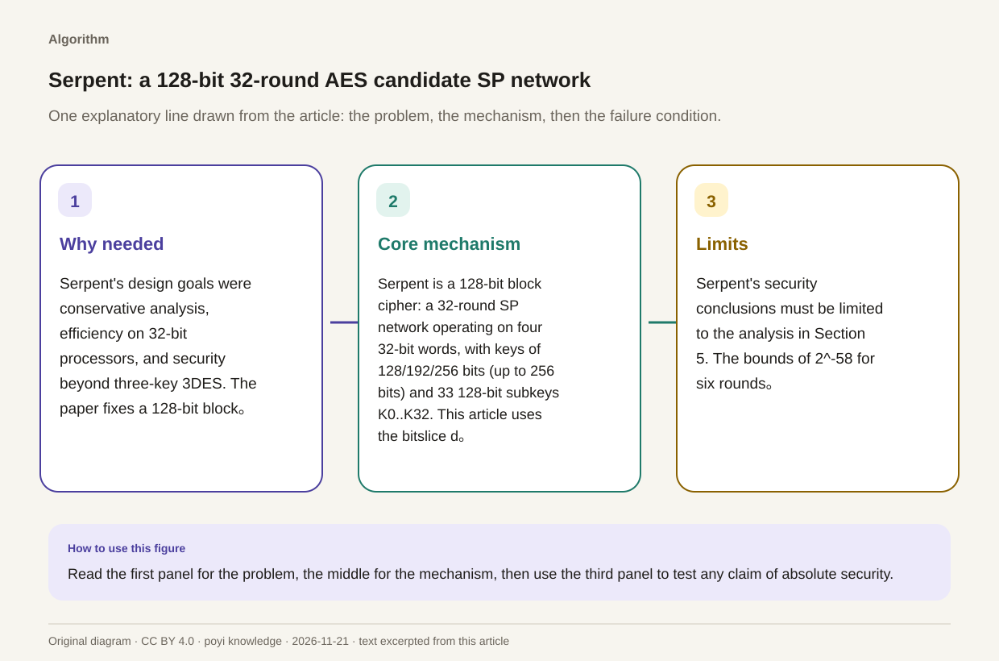
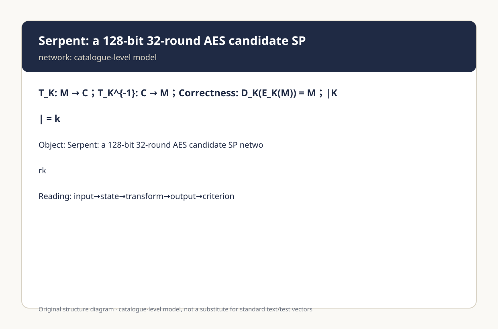

Principles
Algorithm: Serpent (Serpent 分组密码). Serpent is a 128-bit block cipher: a 32-round SP network operating on four 32-bit words, with keys of 128/192/256 bits (up to 256 bits) and 33 128-bit subkeys K0..K32. This article uses the bitslice description from Section 3 of the paper: the plaintext is B0 with no initial permutation IP; each of the first 31 rounds performs key mixing, an S-box and the linear transformation LT, and the last round uses S7 and xors the result with K32:
B0 = P
for i = 0..30:
B_{i+1} = LT(S_{i mod 8}(B_i XOR K_i))
B32 = S7(B31 XOR K31) XOR K32
C = B32
The paper's standard description also has an initial permutation IP and a final permutation FP. They have no cryptographic significance; they only align the data and key bits with the standard implementation's bit order. The standard mode uses Khat_i = IP(K_i), while the bitslice mode uses K_i directly. This article's implementation and vectors use the bitslice description, so there is no IP/FP step. Each round uses a single 4-bit S-box, but in bitslice mode it acts on 32 positions at once: the four 32-bit words X0..X3 are four bit planes, and the j-th S-box input is the 4-bit value formed from bit j of X0, X1, X2 and X3; the output is written back to bit j of the four planes. The S-boxes cycle S0, S1, ..., S7, and round i uses S_{i mod 8}. The linear transformation LT acts on the four 32-bit words as follows (<<< is a 32-bit rotation, << a logical shift):
X0 = X0 <<< 13
X2 = X2 <<< 3
X1 = X1 XOR X0 XOR X2
X3 = X3 XOR X2 XOR (X0 << 3)
X1 = X1 <<< 1
X3 = X3 <<< 7
X0 = X0 XOR X1 XOR X3
X2 = X2 XOR X3 XOR (X1 << 7)
X0 = X0 <<< 5
X2 = X2 <<< 22
The eight 4-bit S-boxes map inputs 0..15 to the following outputs:
S0 = 3 8 F 1 A 6 5 B E D 4 2 7 0 9 C
S1 = F C 2 7 9 0 5 A 1 B E 8 6 D 3 4
S2 = 8 6 7 9 3 C A F D 1 E 4 0 B 5 2
S3 = 0 F B 8 C 9 6 3 D 1 2 4 A 7 5 E
S4 = 1 F 8 3 C 0 B 6 2 5 4 A 9 E 7 D
S5 = F 5 2 B 4 A 9 C 0 3 E 8 D 6 7 1
S6 = 7 2 C 5 8 4 6 B E 9 1 F D 3 A 0
S7 = 1 D F 0 E 8 2 B 7 4 C A 9 3 5 6
These S-boxes are 4-bit bijections with the following properties: every differential characteristic has probability at most 1/4, and a one-bit input difference never produces a one-bit output difference; linear characteristic probabilities lie in 1/2±1/4, and a single-input-bit to single-output-bit relation lies in 1/2±1/8; the output bits have maximum nonlinear order 3. They were not chosen arbitrarily: the paper says the S-boxes were generated from the 32 rows of the DES S-boxes by an RC4-like swapping process seeded with the string "sboxesforserpent", and retained only when they met the differential/linear conditions. Serpent-0 used the DES S-boxes directly; Serpent-1 replaced them with these generated boxes and slightly adjusted the key schedule. The key schedule pads the user key to 256 bits: if the key is shorter than 256 bits, one 1 bit is appended at its most significant end, followed by zeros up to 256 bits. For example, a 128-bit key gets a 1 at position 128 and a 192-bit key gets a 1 at position 192. The padded 256-bit key is written little-endian as eight 32-bit words w[-8..-1], and 132 prekeys are computed:
phi = 0x9E3779B9
w[i] = (w[i-8] XOR w[i-5] XOR w[i-3] XOR w[i-1] XOR phi XOR i) <<< 11
i runs from 0 to 131. Every four consecutive prekeys are then transformed by one S-box into four 32-bit subkey words:
K_i = S_{(3-i) mod 8}(w[4i], w[4i+1], w[4i+2], w[4i+3])
i runs from 0 to 32, producing 33 128-bit subkeys. K0 uses S3, K1 uses S2, K2 uses S1, K3 uses S0, K4 uses S7 again, and so on. The S-box is applied bitslice-style here as well: the same bit position in the four words forms one 4-bit input. The byte order is little-endian: the first plaintext byte enters the least significant byte of word0, and "bit 0 is the least significant bit of" word0; externally the 128-bit block is usually written as 32 hexadecimal digits. The NESSIE vectors used here print bytes in the usual order, and an implementation that loads the four words little-endian matches those hex strings exactly; interpreting the words big-endian gives different results for non-zero vectors. Decryption uses inverse S-boxes, the inverse linear transformation and the subkeys in reverse order:
state = C
state = state XOR K32
state = InvS7(state)
state = state XOR K31
for i = 30..0:
state = InvLT(state)
state = InvS_{i mod 8}(state)
state = state XOR K_i
P = state
The inverse LT reverses the forward operations: rotate X2 right by 22 and X0 right by 5, undo the X2 xor, undo the X0 xor, rotate X3 right by 7 and X1 right by 1, undo the X3 and X1 xors, and finally rotate X0 right by 13 and X2 right by 3. The teaching implementation writes these steps in bit-level order and masks every result to 32 bits. Serpent's bitslice design lets a single 128-bit block compute 32 S-box instances in parallel on a 32-bit processor, unlike traditional bitslice DES which must encrypt 64 blocks at once. This is why it can stay fast in ordinary modes of operation; the SP network, the S-box choice and the LT were all designed around this goal.

Why it matters
Serpent's design goals were conservative analysis, efficiency on 32-bit processors, and security beyond three-key 3DES. The paper fixes a 128-bit block, 128/192/256-bit keys and 32 rounds. The designers believed 16 rounds would already be comparable to three-key 3DES, but because AES might be used in standards and legacy systems for many years, they chose 32 rounds for a larger security margin.
The security analysis gives specific conservative bounds: a 6-round differential characteristic has probability at most 2^-58, a 24-round characteristic at most 2^-232, and the 28-round linear analysis gives a similar order; the paper further conjectures that the best 28-round differential has probability at most 2^-120. The designers analyzed 24- and 28-round characteristics, 8 and 4 rounds shorter than the full cipher, and say they found no useful shortcut attack; they believe the best attack is exhaustive key search, with 2^128, 2^192 and 2^256 work for the three key lengths. These are the designers' 1998 conclusions, not a formal proof against every attack model.
Section 2.1 lists the S-box properties: differential characteristic probability at most 1/4, no one-bit input difference leading "to a one-bit output difference"; linear characteristic probability in 1/2±1/4, and one-bit to one-bit linear relations in 1/2±1/8; nonlinear order 3. These properties ensure at least one active S-box per round and rapid diffusion in later rounds. The S-boxes were generated deterministically from the 32 DES S-box rows rather than chosen at random; this addresses trapdoor concerns while preserving differential/linear properties and reducing hardware gate count.
On performance, the paper reports that on a 133 MHz Pentium/MMX the 32-round bitslice implementation reaches 9,791,000 bit/s, about 1738 cycles per block, roughly the same as the optimized DES implementation on the same machine (9,824,864 bit/s); "keeping the subkeys in a fixed array" raises this to 10,281,124 bit/s, about 1656 cycles per block. The paper estimates about 14.7 Mbit/s on a 200 MHz Pentium. These are 1998 implementation figures, not performance promises for current platforms.
Serpent is one of the algorithms whose test vectors were verified by the NESSIE project and was one of the five AES finalists; it was not selected as AES. The authors' page says Serpent is completely in the public domain with no use restrictions; it also says the optimized implementations in the submission package are now released under the GPL, although old "comments in the code still say otherwise". Any use of specific code should rely on the actual licence text.
For teaching, Serpent combines 4-bit S-boxes, bit-plane parallelism, a linear transformation and a 256-bit key expansion into a clear SP network; its key-padding rule (append a 1 bit rather than merely zero-pad) and its bitslice representation are common sources of implementation errors.
Applications
The NESSIE verified vectors are supplied as three files for 128-, 192- and 256-bit keys. In each file, Set 1 has 128, 192 and 256 vectors respectively, exactly one per key bit flip; Set 2 uses a zero key with varying plaintext; Set 3 uses a key and plaintext made of the same repeated byte; Set 4 contains two fixed key/plaintext pairs. This article reproduces:
- all 576 Set 1 vectors (128+192+256), encrypting and decrypting each one;
- the "Iterated 100 times" result for every Set 1 vector and the "Iterated 1000 times" result for vector#0 of each key length;
- the first 32 Set 2 vectors, the first 32 Set 3 vectors and both Set 4 vectors for each key length (198 vectors in total).
Representative vectors:
128-bit, Set 1 #0:
K = 80000000000000000000000000000000
P = 00000000000000000000000000000000
C = 264E5481EFF42A4606ABDA06C0BFDA3D
128-bit, Set 3 #0:
K = 00000000000000000000000000000000
P = 00000000000000000000000000000000
C = 3620B17AE6A993D09618B8768266BAE9
192-bit, Set 1 #0:
K = 800000000000000000000000000000000000000000000000
P = 00000000000000000000000000000000
C = 9E274EAD9B737BB21EFCFCA548602689
256-bit, Set 1 #0:
K = 8000000000000000000000000000000000000000000000000000000000000000
P = 00000000000000000000000000000000
C = A223AA1288463C0E2BE38EBD825616C0
128-bit, Set 4 #0:
K = 000102030405060708090A0B0C0D0E0F
P = 00112233445566778899AABBCCDDEEFF
C = 563E2CF8740A27C164804560391E9B27
Iterating 128-bit Set 1 #0 one hundred times gives EFE6F058D74E357A1CA935D35E0E4F24, matching the NESSIE file; the 192- and 256-bit results also match. Set 2 #0 uses an all-zero key and plaintext 80000000000000000000000000000000, producing ciphertext A3B35DE7C358DDD82644678C64B8BCBB, which checks plaintext diffusion under a zero key. The 100-iteration results for 192-bit and 256-bit Set 1 vector#0 are B083CEAE24F090E4F24E743F1D47BFC2 and 739E0148971FD975B585EAFDBD659E2C.
Using the paper's formulas, this article computes the first subkey K0 for the 128-bit key 80000000000000000000000000000000 as 6F539CD2 A7A3A3CE D29591ED 8EDF7292. The paper does not print this intermediate value; it follows from key padding, the prekey recurrence and the S3 transform, and it is checked indirectly through the ciphertexts of all NESSIE vectors.
The Linux kernel CryptoAPI contains a Serpent implementation (crypto/serpent_generic.c); the file header attributes it to Dag Arne Osvik (2002) and notes that the key is padded "to the maximum of 256 bits before round key generation" and that keys up to 256 bits are allowed. This shows Serpent is available in a general operating system's cryptographic interface; it does not show that the kernel recommends Serpent or that any protocol standard adopted it.

Limits & attacks
Serpent's security conclusions must be limited to the analysis in Section 5. The bounds of 2^-58 for six rounds, 2^-232 for 24 rounds and the 2^-120 conjecture for a 28-round differential are upper bounds or conjectures from a conservative model, not a complete formal proof for 32-round Serpent. The paper's "there is no indication of any useful shortcut attack" is a 1998 analysis conclusion, not a guarantee that no future cryptanalysis will appear; this article does not cite unverified third-party attacks to claim that Serpent has been broken or is absolutely secure.
For modes of operation, after about 2^64 blocks in CBC/CFB an attacker expects a repeated ciphertext block and can derive plaintext relations; key-collision attacks cost about 2^(k/2). These properties apply to every 128-bit block cipher, not only Serpent. Real protocols should rekey well before 2^64 blocks and should not use a block cipher directly as a hash or MAC.
At the implementation level, Serpent's S-boxes and LT are usually implemented with table lookups or bit operations; lookups create cache and timing side-channel risks, while bitslice implementations are sensitive to register pressure and compiler optimization. This article's teaching implementation uses ordinary JavaScript arrays and 32-bit operations; it is not constant-time, has no masking, key isolation or fault detection, and must not protect real data.
Deployment scope also matters: NESSIE vectors show conformance, not security; a Linux kernel implementation is not standardization or a security recommendation; FIPS 197 specifies AES (Rijndael) only, and Serpent is not a FIPS 197 algorithm. Serpent defines only a block cipher and supplies no mode of operation, IV management, padding, integrity protection, key agreement or side-channel defence.
Finally, all 576 Set 1 vectors and the sampled Set 2/3/4 vectors come from the same author-supplied NESSIE files. They are strong checks of byte order, key padding, subkeys and the round function, but they are not a substitute for cryptanalysis.
History
Serpent was designed by Ross Anderson, Eli Biham and Lars Knudsen. The first version, Serpent-0, was presented at the 1998 Fast Software Encryption (FSE'98) workshop and used the DES S-boxes directly. For the AES submission the designers improved the algorithm: they used eight newly generated S-boxes, slightly adjusted the key schedule and kept 32 rounds. That version is Serpent-1, normally called Serpent.
The paper says Serpent-0 used the DES S-boxes to borrow their long-studied differential and linear properties and to reassure the public that no trapdoor had been inserted; Serpent-1 generates its S-boxes with a deterministic RC4-like swapping process over the 32 DES S-box rows, seeded with "sboxesforserpent", and keeps them only if they meet the required conditions. This preserves analyzability while improving the differential/linear bounds.
Serpent was submitted as an AES candidate in 1998. The authors' page says it was one of the five AES finalists; AES ultimately chose Rijndael, published as FIPS 197 on 26 November 2001. FIPS 197 was updated on 9 May 2023 as FIPS 197-upd1; the update does not change the fact that Serpent was not selected as AES.
The authors' page says Serpent was announced as public domain at the AES conference on 21 August 1998 and imposes no use restrictions; it also says the optimized implementations in the submission package are now under the GPL, although comments in the code still carry the old statement. Any use of specific code or licence text should follow the actual files.
Serpent later appeared in the Linux kernel; crypto/serpent_generic.c is Dag Arne Osvik's 2002 implementation. Such implementations show that Serpent remains usable as a block cipher, but they do not change the fact that it is not the AES standard.
Worked example & verification
Worked example
Take one published or standard test vector, record the input, the ordered steps and the byte-exact output, then compare with an independent implementation. Where no citable numeric vector is available, the entry records only structural steps and does not invent an output.
References
- Wikipedia search entry for Serpent 分组密码. https://zh.wikipedia.org/w/index.php?search=Serpent%20%E5%88%86%E7%BB%84%E5%AF%86%E7%A0%81
- Handbook of Applied Cryptography (Menezes, van Oorschot, Vanstone). https://www.cacr.math.uwaterloo.ca/hac/